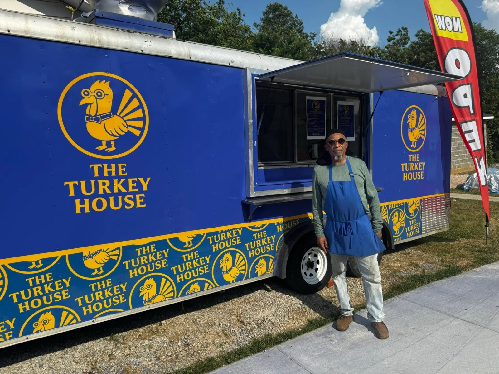
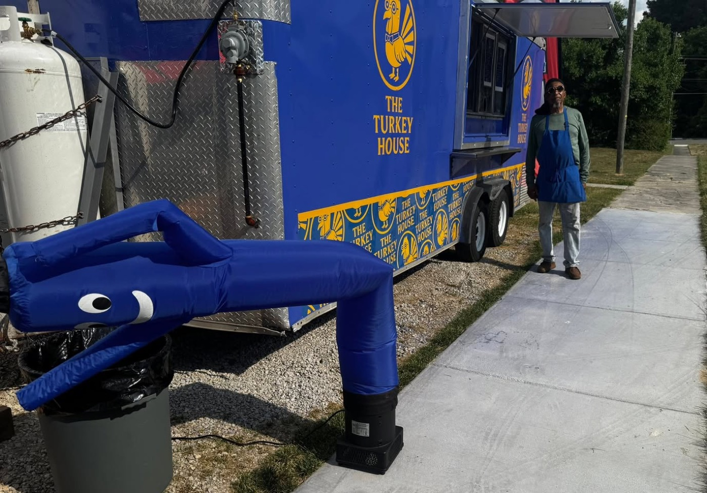

Our story
Meet Brother Love.
Durham born and raised. Cobbler by trade. Short-order cook by training. Owner of the only Turkey House in town.
The man behind the window
You’ll meet the owner when you order.
Most people know him as Brother Love. He was born and raised in Durham, and he has spent more than forty years running his own business as a cobbler: repairing and making fine leather shoes, one careful stitch at a time.
His kitchen roots go back to high school, where he worked as a short-order cook from ninth grade through twelfth and learned the food trade from the ground up. Today those two crafts meet: the patience of a shoemaker and the speed of a short-order cook.
When you walk up to The Turkey House, the person handing you your food is the person who seasoned it.
Why turkey
Food you can feel good about.
No pork. No red meat.
Everything on our menu is turkey, including the hot dogs and the chili. It’s a pork-free kitchen from top to bottom.
Seasoned for days
Our turkey is seasoned well, marinated overnight, rested in the fridge, then smoked or cooked fresh for your order. The recipe stays a secret. The flavor doesn’t.
Made to keep you going
Brother Love eats this way himself. “I don’t eat pork or red meat, so why would I feed it to somebody else? I want people to live like I live.”
Clean where it counts
Our kitchen is open to inspection.
Sanitation matters to us, and we know it matters to you. Out of a possible 100, The Turkey House scored a 97 on its Durham County health inspection, and we’re not stopping there. We’re studying for the food-protection sanitation certification to close the gap.
“If you got a 95 and over, people know you’re on point.” We agree. We wash up, we wipe down, and we run a tight truck.
Our promise to you
- Fresh, wholesome food, cooked to order
- A clean truck and clean hands, every shift
- Fair prices that we’ll keep as low as we can
- If something’s not right, tell us and we’ll make it right
- We open when we say we will and we keep the doors open
More than a food truck
We grow together.
“It’s about helping and building. We grow together. I’m not a selfish person. I want to see us rise up and go high.”
Brother Love hires from the neighborhood, and he teaches. In his shoe shop he’s training a young apprentice with a simple goal: in a year’s time, be ready to go into business for himself. The same open door is here at the truck for cooks, students and anyone who wants to learn a trade the right way.

What’s next
Start here. Build up. Keep the doors open.
Today
Thursday through Saturday at 506 Burlington Ave, with online ordering and curbside pickup.
Next
Smoked turkey legs and wings, more days on the calendar, and menu ideas from you. Tell us what you want to see.
Down the road
A brick-and-mortar Turkey House right here in Durham, and one day, maybe more of them. There’s only one The Turkey House, and we plan to keep it that way.
“Keep the doors open. Just keep the doors open.”
The best business advice Brother Love ever got, and the way he runs The Turkey House.